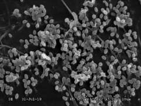
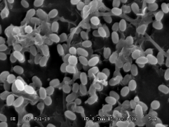
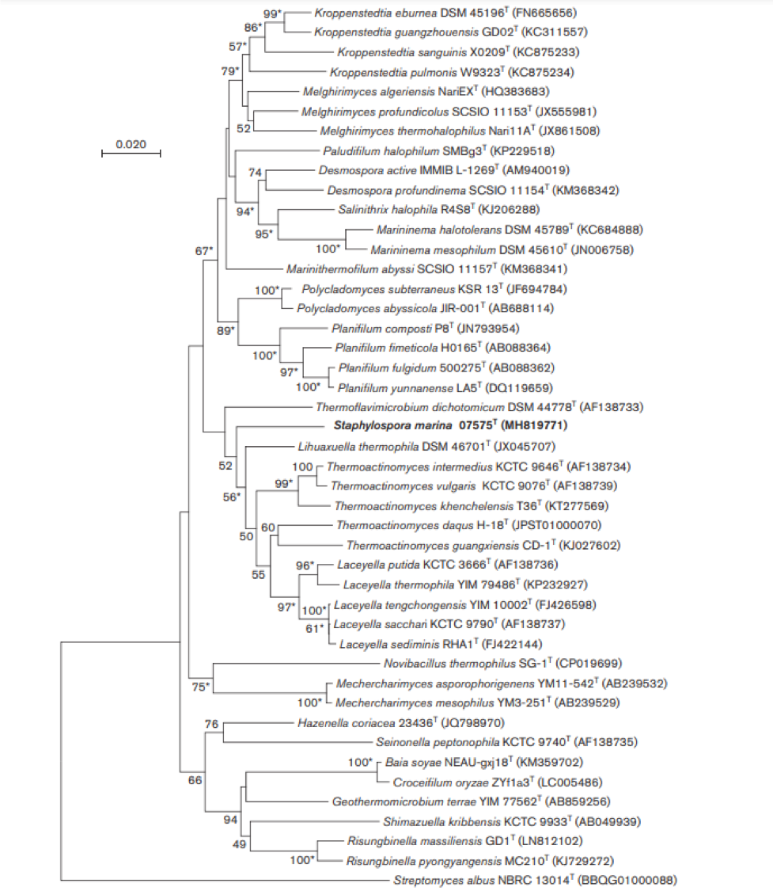

Microbial Diversity in Hydrothermal Vent Environment
Master Research | South China Sea Institute of Oceanology, UCAS | 2016–2019


- Conducted a comprehensive analysis of microbial diversity in deep-sea hydrothermal environments, utilising high-throughput sequencing (Illumina MiSeq) to examine 19 soil samples and uncover previously uncharacterised microbial communities in extreme conditions.
- Developed strong research and bioinformatics skills by processing and analysing sequencing data, identifying taxonomic relationships and assessing community structures to gain a deeper understanding of microbial ecosystems
- Proposed and published three novel genera and two novel species, making significant contributions to microbial ecology and demonstrating proficiency in scientific writing, research design and data interpretation.
